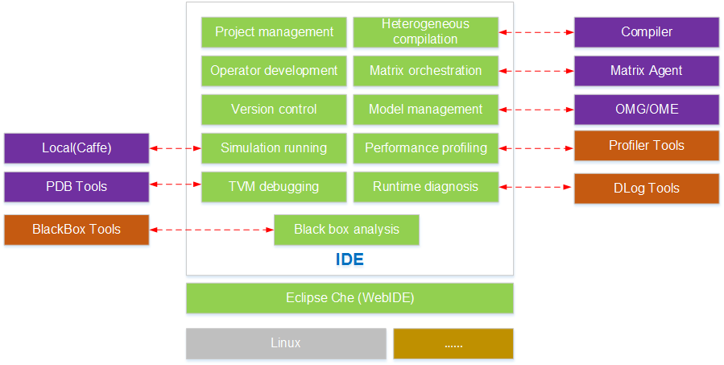

Function Description
Overall Architecture
Figure 1 shows the overall architecture of Mind Studio.
Figure 1 Overall architecture of Mind Studio

Features
Mind Studio provides the following features:
User-friendly NPU-based programming GUI
Operator developers can customize CCE development on Mind Studio based on the CCE programming depth to implement in-depth integration. The keywords of the extended CCE language are highlighted. You can compile heterogeneous hybrid codes in one-click mode.
NPU-based graphical debugging
For the development of the operator acceleration library on the NPU, Mind Studio provides a graphical GUI for users to implement real-time tracking of the running status of the acceleration operators on the AI core and AI CPU.
Automatic offline model management
Trained third-party offline models under frameworks such as Caffe and TensorFlow (Caffe2 and MXNet are not supported currently) can be imported to Mind Studio and converted into models supported by the system. Model interfaces are generated automatically in one-click mode, enabling interface-based model programming.
"Zero" programming for service process orchestration
For service process developers, Mind Studio provides the drag-and-drop programming mode based on service nodes. You can implement service orchestration by simply dragging and connecting service nodes. The one-stop service after orchestration, ranging from compilation and running to result display, makes process development smarter. "Zero" programming is involved. In this way, you can get started quickly without extra learning costs.
Graphical TE programming
Mind Studio provides the industry's first integrated development environment based on the TVM-based Tensor Engine (TE) for programming development. Operators can be transplanted quickly across platforms, enabling instant NPU adaption.
Log analysis
Mind Studio provides a system-wide log collection and analysis solution for the NPU platform, improving the efficiency of locating runtime algorithm problems. A unified log format is adopted. Visualized analysis of cross-platform logs and runtime diagnosis runs in Web mode, improving the usability of the log analysis system.
Performance analysis
Mind Studio provides graphical user interfaces (GUIs) and command-line interfaces (CLIs) to implement efficient, easy-to-use, and flexible performance profiling on the multi-node and multi-module heterogeneous system on the host and device. Synchronous analysis of performance and power consumption of the NPU device is implemented, which meets the requirements of algorithm optimization for system performance analysis.
Simulation
Function-level simulation execution libraries for the AI core are provided. You can call AI core simulation by using the program.